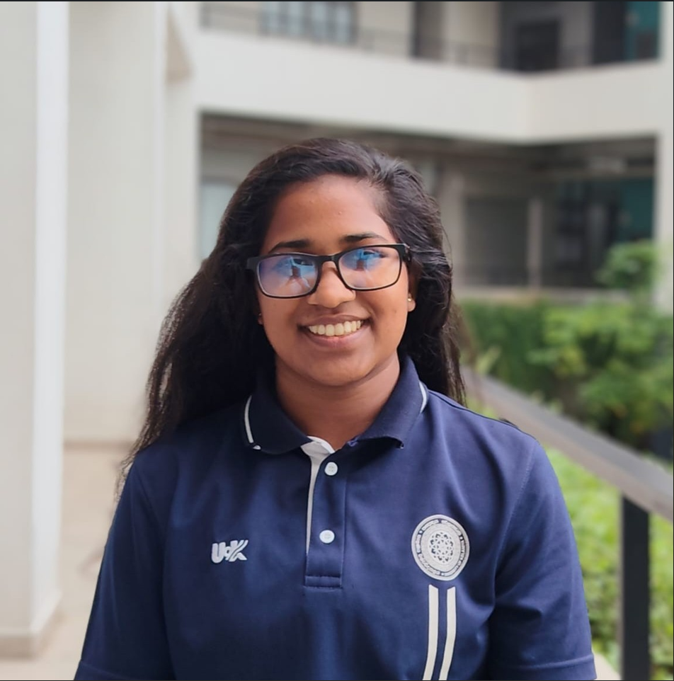
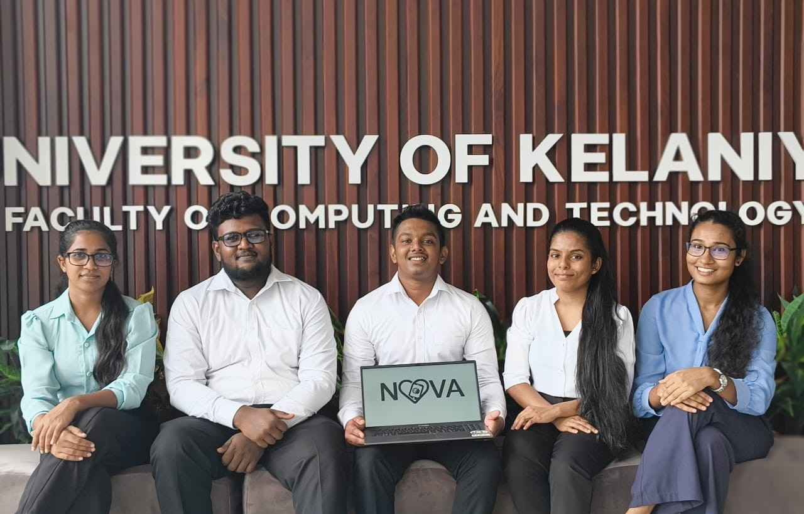
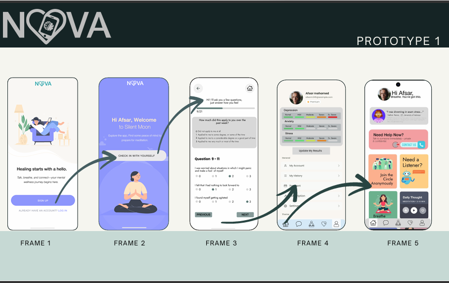
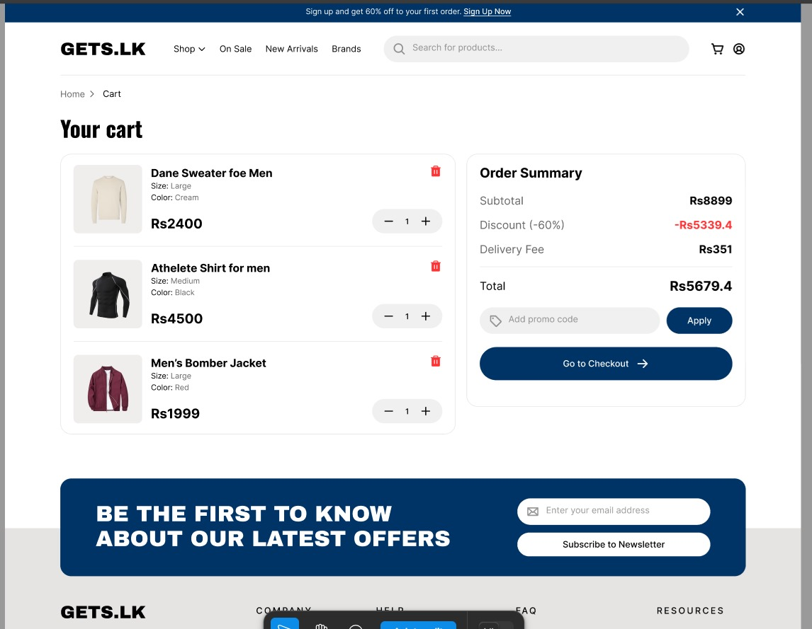
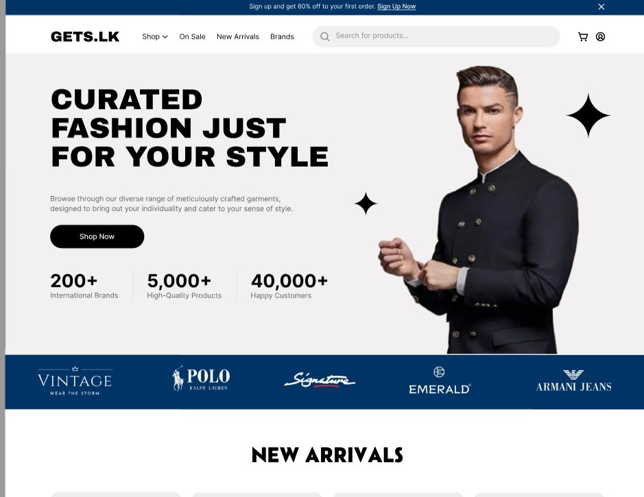

Tharushi Dilhara
Student ID:CT/2022/063 | Faculty of Computing and Technology
BICT Undergraduate (Year 2) | University of Kelaniya
Introduction
I am a dedicated second-year BICT undergraduate at the University of Kelaniya, with a clear academic focus on the Networking pathway. My academic focus lies in building robust, scalable, and automated network infrastructures. I am deeply passionate about Linux system administration and the evolving landscape of Network Programmability. Beyond academics, my active membership in the Legion Society, the Adventure Club, and my participation in university sports have cultivated a unique professional edge. These roles have provided me with hands-on experience in leadership, teamwork, and strategic communication. I believe that the discipline of an athlete and the collaborative nature of student societies are directly transferable to the IT industry. I aim to leverage these skills to manage complex technical projects and lead innovative teams in the rapidly evolving telecommunications and infrastructure sectors.
2. About Me (Personal Profile)
Educational Background: I successfully completed my G.C.E. Advanced Level examinations at Rajapaksa Central College, Weeraketiya, in the Bio System Technology stream. Then I have been selected for the Bachelor of Information and Communication Technology (BICT) degree programme at the University of Kelaniya. My education at the Faculty of Computing and Technology has allowed me to dive deep into the world of network architectures, database management, and cybersecurity. I have successfully navigated rigorous course modules in C++, while also dedicating my personal time to mastering Linux administration and Python scripting. This academic path has taught me how to approach complex problems with a structured, engineering-focused mindset.
Interests:
- Technical: My current academic focus includes Database Management Systems, Network Architecture, and Cybersecurity. I am dedicated to understanding how secure infrastructure supports global digital systems.
- Personal: I am reading books and doing paper quilling arts as my hobbies. Most times I spend my free time by doing those things.Additionally, I am a passionate traveler.
Career Goals: My short-term goal is to specialize in the Networking pathway and earn my CCNA certification to validate my expertise in enterprise-level infrastructure. I am eager to secure an internship where I can apply my Linux and automation skills to real-world server environments.My long-term professional goal is to become a Network Administrator, where I can manage and secure complex enterprise infrastructures to ensure seamless global connectivity.
Personal Values: I am guided by the values of discipline, precision, and continuous growth. My background in university sports and my leadership roles in student societies have taught me that teamwork and integrity are non-negotiable. I am committed to lifelong learning to keep pace with the rapidly evolving IT industry.
3. Academic Projects
Project Title: SDN-Based Multi-Honeypot Orchestrator with LLM-Powered Cross-Protocol Context Memory(Ongoing)
Objective
To transition from passive, siloed honeypots to an active,
"context-aware" defense system that correlates attacker behavior across multiple protocols in
real-time.
Tools & Technologies
- SDN Controller & Emulator: Ryu and Mininet.
- Intelligence Engine: Ollama with Llama 3.
- Database:Redis.
- Virtualization: Docker.
- Trap Development: Flask (Web), pyftpdlib (FTP), and Cowrie (SSH).
Project Description
This ongoing project addresses the "Research Gap" where
standard honeypots operate in isolation, making them "blind" to multi-stage attacks. We are
developing a centralized "Brain" (Python Orchestrator) that uses Cross-Protocol Context Memory to
link attacker activities across SSH, Web, and FTP services. By storing behavioral data in Redis, the
system recognizes when an IP escalating from a web scan to an SSH brute-force attempt is the same
malicious actor.
My Role: Research & Information Gathering
Current Progress
The project has reached significant technical milestones, with
the Mininet topology and the Ryu SDN controller now successfully configured and operational. We have
also finalized and deployed the three primary sensory traps SSH (Cowrie), Web (Flask), and FTP
(pyftpdlib) within isolated Docker containers to begin real-time log generation.
NOVA - Student Mental Wellness Platform


Objective
To provide a localized, anonymous, and stigma-free digital platform
for Sri Lankan students to manage mental health issues such as stress, anxiety, and depression
caused by academic and financial pressure.
Tools & Technologies
- Design: Figma (for UI/UX prototyping)
- Research & Testing: Google Forms, DASS-21 questionnaire.
Description
NOVA is a mobile application designed to bridge the gap between
students and mental health support. It features a DASS-21 self-test for instant screening, anonymous
6-person peer support circles, and a customizable AI chat assistant. The platform also provides
direct connections to professional consultants and counselors via chat or call.
My Role: Research & Information Gathering
Outcomes
- Successfully developed a functional UI prototype that emphasizes simplicity and empathy.
- Identified that anonymity and cultural fit are more critical for student adoption than complex features.
GETS.LK


Objective
To design a visually appealing, functional, and engaging online store
specifically tailored to the men's fashion retail market.
Tools & Technologies
- Design:Figma (for UI/UX prototyping)
- Documentation:Microsoft Word
Objective
GETS.LK is a modern e-commerce solution focused on young professionals
and
fashion-conscious men. The project involved a comprehensive journey from idea generation and market
research to the final design of a minimalist, structured layout. Key features include advanced
product filters (category, price, size, and color), high-quality visual catalogs, and a streamlined
order summary interface.
My Role: Thesis Writing & Documentation.
Outcomes
Successfully developed a minimalist, structured layout that enhances the
shopping experience through high-quality visual storytelling.
4. Technical Skills
Programming Languages
C++ Java Python Bash ScriptingTools & Technologies
Cisco Packet Tracer Wireshark Docker Git and GitHubHardware Skills
Sensor Integration & Testing PCB Design5. Club Activities & Leadership Experience
Legion Society - University of Kelaniya
Position: Co-Editor (Editorial Panel)
Events & Activities
- VANGUARD Inter-University Esports Championship(Ongoing): Secretary
- Interfaculty Gaming Tournament: Coordinator

Contributions
- As Secretary, I manage the editorial team, overseeing the creation and refinement of all society publications.
- I responsibled for all official documentation works.
Skills Developed
- Communication Skills.
- Teamwork & Collaboration
- Time Management
Adventure Club - University of Kelaniya
Position: Member
Events & Activities
- First Aid Training Wokshop: Participated
- Bathalegala Hike: Organizing Committee Member
Contributions
- I responsibled for making project proposal for the hike.
Skills Developed
- Communication Skills.
- Teamwork & Collaboration
- Adaptability
- Problem-Solving
Weightlifting Team - University of Kelaniya
Position: Women’s Vice Captain
Events & Activities
- Inter Faculty Weightlifting Championship: Participated
- Novices Weightlifting Championship: Participated
- Sri Lanka University Games 2025: Participated
- University of Colombo Invitational Weightlifting Championship 2025 & 2026: Participated
Contributions
- I participated in university-level weightlifting competitions.
- Supported the leadership in fostering team discipline and organizing training schedules.
Skills Developed
- Communication Skills
- Teamwork & Collaboration
- Discipline & Resilience
- Time Management
6. Research & Academic Engagement
Workshop Participation: Microsoft Student Champs
- Organization: Microsoft Learn Student Ambassadors - Sri Lanka.
- Date:30th November 2024.
- My Role:Participant
- Key learnings:
- Gained fundamental knowledge on building and deploying AI solutions using Azure AI.
- Explored advanced security protocols and firewall configurations to safeguard digital identities and network infrastructure.

7. Certifications & Courses
- Linux Essentials Course: Successfully completed the Linux Essentials Course conducted by Cisco Networking Academy.
- Docker Course: Currently following (Conducted by FOSS Community, UOK)
- ISC2 Certificate Of Completion

8. Achievements & Extracurricular Activities
- University Colors: Weightlifting
- University of Colombo Invitational Weightlifting Championship 2025: 53kg Weight category 2nd place
9. Reflection Section
Technical Growth & Project Collaboration
During my university studies, I participated in several group projects, most notably the SDN-Based Multi-Honeypot Orchestrator and the NOVA wellness platform. This experience helped me understand how to work effectively in a team by integrating complex technologies like Mininet, Docker, and Llama 3. I learned the importance of communication and coordination among team members; because each member had different strengths, we were able to complete the projects successfully by sharing responsibilities, such as my role in research and thesis compilation. I also improved my technical knowledge by applying what I learned in lectures to real-world tasks. For example, configuring the Ryu SDN controller and deploying three sensory traps allowed me to see how network programmability functions in a live environment. One challenge we faced was managing time, as members had different schedules and deadlines, which sometimes caused delays. To overcome this, we created a group timetable and assigned clear roles, which was crucial in achieving our goal of a 'Smart Mitigation' response time of less than 5 seconds. In the future, I plan to communicate more effectively and take a more active role in leading technical discussions to ensure smoother collaboration.
Leadership & Organizational Management
My involvement in the Legion Society and the Adventure Club provided a different perspective on teamwork outside of a strictly technical setting. As the Secretary and Co-Editor, I was responsible for managing an editorial team and handling all official documentation works. This experience helped me understand how to coordinate large groups effectively, particularly during the VANGUARD Inter-University Esports Championship and the Bathalegala Hike. I learned that clear communication is vital when managing diverse teams with different responsibilities. By sharing administrative duties—such as drafting project proposals and managing tournament registrations, we successfully executed complex events. I improved my professional skills by applying organizational theories to real-world coordination tasks, such as managing the apparel pre-order phase for over 500 participants. A significant challenge was managing the conflicting deadlines of student organizers from different faculties and universities. To overcome this, I implemented strict documentation protocols and clear communication channels. In the future, I would like to improve my time management between multiple high-pressure roles and continue leading group discussions to foster better student engagement.
10. Career Goals & Future Development
Short-Term Goals
- Successfully complete my BICT degree specialize in the Networking pathway with a good grade.
- Obtain industry-standard certifications, specifically CCNA.
- Secure an internship in high competitive industry environmnt
Long-term goals
- Become a Network Administrator.
Skills to be developed
- Gaining hands-on experience with cloud platforms focusing on secure hybrid networking.
- Building on my experience as Secretary and Co-Editor to master high-level technical presentations and team coordination.
- Deepening practical skills in Wireshark, Packet Tracer, and Docker for advanced network analysis.